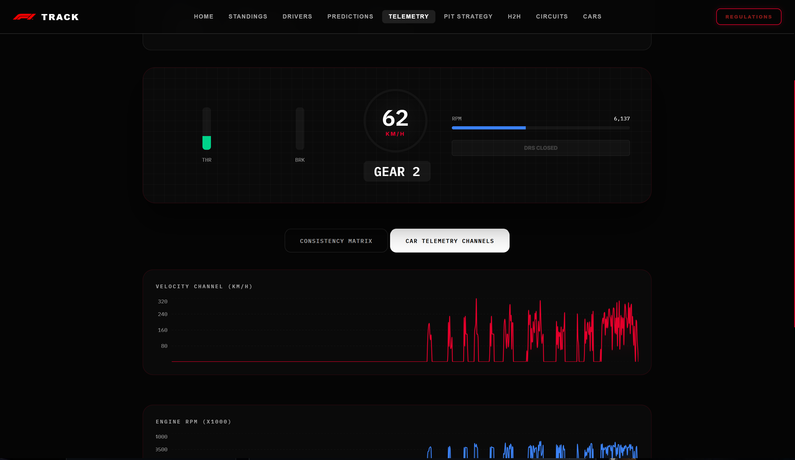

Flagship Master Project
F1Track: Live Formula 1 Analytics Platform
Full-stack engineering platform combining real-time OpenF1 telemetry polling (refreshed sub-second), a 50,000-iteration Monte Carlo race outcome prediction engine, historical database of 185,000+ records across 33 relational tables, and an interactive Three.js 3D car technical inspection studio.

Java · Spring Boot 3.2
React 18
Three.js
Oracle Cloud (OCI)
Docker & Nginx
OpenF1 API
185K+ Historical Records
20+ REST Endpoints